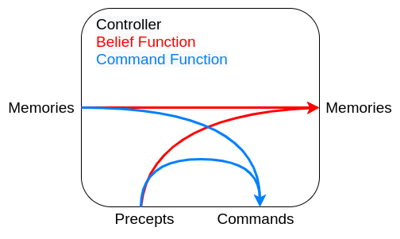
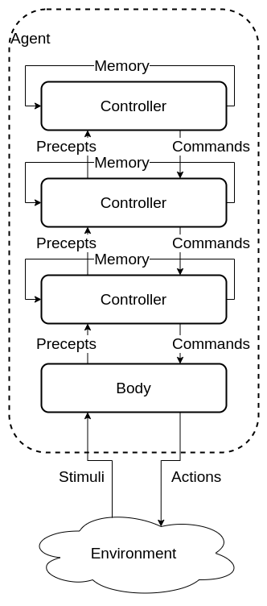
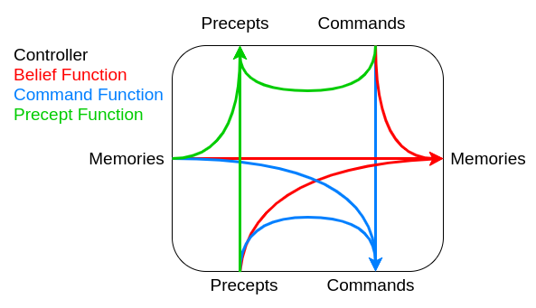

Agent architectures
Body
The agent interacts with the environment through the body
The body:
- Perceives stimuli form the environment and creates precepts for the controller
- Receives commands form the controller and generates actions on the environment
- In some cases may have actions that are not controlled
Controller
The controller is the brains of the agent and generates commands based on current and previous precepts. Controllers have a limited memory and computational resources
Agent logic
Traces
- Percept Trace A sequence of all percepts, past present and future.
- Command Trace A sequence of all commands, past present and future.
- Agent History A sequence of past and present commands and precepts at to time \(t\).
- transduction A function from percept traces to command traces.
- History Percepts to time \(t\) (including time \(t\)) + Commands to time \(t\) = History at \(t\)
- Causal transduction History at time \(t\) -> Command at \(t\)
- Controller An implementation of a causal transduction.
Belief Status
An agent has limited memory
It must decide what subset of its history to remember
This is the agents memory
At every step the controller needs to decide
- What to do
- What to remember
A belief status should approximate the environment
Single level hierarchy
In a single level hierarchy the agent has one body and a single controller.

functions
- Belief state function controls the next belief state / memories.
- Command state function decides on the commands the controller should produce.

Advantages
Simpler and can be easier to program
Disadvantages
All problems are processes together, e.g collision detection and long term planning
This can slow down the goals that need a quick response time
Multi level hierarchy
Made from a body and many layers of controllers.
Each controller acts as a virtual body to the controller above. It receives precepts and commands from the controller below it and sends selected precepts and commands to the controller above.

functions
- Belief state function controls the next belief state / memories.
- Command state function decides on the commands the controller should produce.
- Precept function decides what commands to send to the higher controller

Agent Types
Ideal Mapping
In principle an agent can be though of as an mapping from the set of precepts to the set of commands. There is a theoretical Ideal mapping where the ideal action is taken at each step. The simple approach would be a lookup table:
- Table too large
- Time to build
The goal of an agent is to approximate this ideal mapping
Simple Reflex agents
Simple agents based on a series of if -> else statements
Can achieve fairly complex behavior.
Can be run quickly
Reflex agent with State
similar to the simple Reflex Agents but retains knowledge
Needs an internal state
Can keep track of a changing world
Goal based agents
Keeps track of what is trying to be achieved
More flexible than a reflex agent
Utility based agents
Uses a Utility function to judge the state of the world
Allows for a choice of which goals to achieve and can select the one with the highest utility.
If goal outcomes are uncertain a probability formula can be used.
Learning Agent
Adds in several components
- critic Using a performance standard informs the learning agent how well it is doing.
- performance element responsible for acting based on the improvements from the learning agent.
- learning element responsible for making improvements with knowledge of the agents success.
- problem generator responsible for suggesting actions for new experiences to attempt to prevent being stuck at a local maximum
Takes information about hove the performance agent is doing and attempts to optimise the agent to improve performance. Learning provides the agent with autonomy.